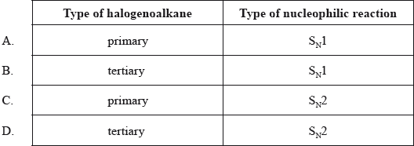

SL Paper 1
Which combination best describes the substitution reaction between bromoethane and dilute aqueous sodium hydroxide?
\[{\text{C}}{{\text{H}}_{\text{3}}}{\text{C}}{{\text{H}}_{\text{2}}}{\text{Br}} + {\text{O}}{{\text{H}}^ - } \to {\text{C}}{{\text{H}}_{\text{3}}}{\text{C}}{{\text{H}}_{\text{2}}}{\text{OH}} + {\text{B}}{{\text{r}}^ - }\]

In organic reaction mechanisms, what does a curly arrow represent?
A. The movement of a pair of electrons towards a nucleophile
B. The movement of a pair of electrons towards a positively charged species
C. The movement of a pair of electrons away from a positively charged species
D. The movement of a pair of electrons towards a Lewis base
Which type of reaction occurs when 2-iodo-2-methylpropane, \({\text{C(C}}{{\text{H}}_{\text{3}}}{{\text{)}}_{\text{3}}}{\text{I}}\), reacts with aqueous sodium hydroxide, NaOH(aq)?
A. Addition
B. Free-radical substitution
C. \({{\text{S}}_{\text{N}}}{\text{1}}\)
D. \({{\text{S}}_{\text{N}}}{\text{2}}\)
Propene is converted to propanone in a two stage process.
\[{\text{Propene}} \to {\text{X}} \to {\text{Propanone}}\]
What is the formula of compound X?
A. \({\text{C}}{{\text{H}}_{\text{3}}}{\text{CHBrC}}{{\text{H}}_{\text{3}}}\)
B. \({\text{C}}{{\text{H}}_{\text{3}}}{\text{C}}{{\text{H}}_{\text{2}}}{\text{C}}{{\text{H}}_{\text{2}}}{\text{Br}}\)
C. \({\text{C}}{{\text{H}}_{\text{3}}}{\text{CHOHC}}{{\text{H}}_{\text{3}}}\)
D. \({\text{C}}{{\text{H}}_{\text{3}}}{\text{C}}{{\text{H}}_{\text{2}}}{\text{C}}{{\text{H}}_{\text{2}}}{\text{OH}}\)
Chloroethane, \({{\text{C}}_{\text{2}}}{{\text{H}}_{\text{5}}}{\text{Cl}}\), reacts with aqueous sodium hydroxide, NaOH, to form ethanol, \({{\text{C}}_{\text{2}}}{{\text{H}}_{\text{5}}}{\text{OH}}\).
Which statement about the mechanism of this reaction is correct?
A. The reaction follows an \({{\text{S}}_{\text{N}}}{\text{1}}\) mechanism.
B. Homolytic fission of the carbon-chlorine bond occurs in chloroethane.
C. The reaction is unimolecular.
D. The transition state formed is negatively charged.
Which type of halogenoalkane is the substance shown below, and which type of nucleophilic reaction does it undergo with an aqueous sodium hydroxide solution?


What is the type of mechanism and an important feature of the reaction between \({\text{C(C}}{{\text{H}}_{\text{3}}}{{\text{)}}_{\text{3}}}{\text{Br}}\) and aqueous NaOH?

From which monomer is this polymer made?